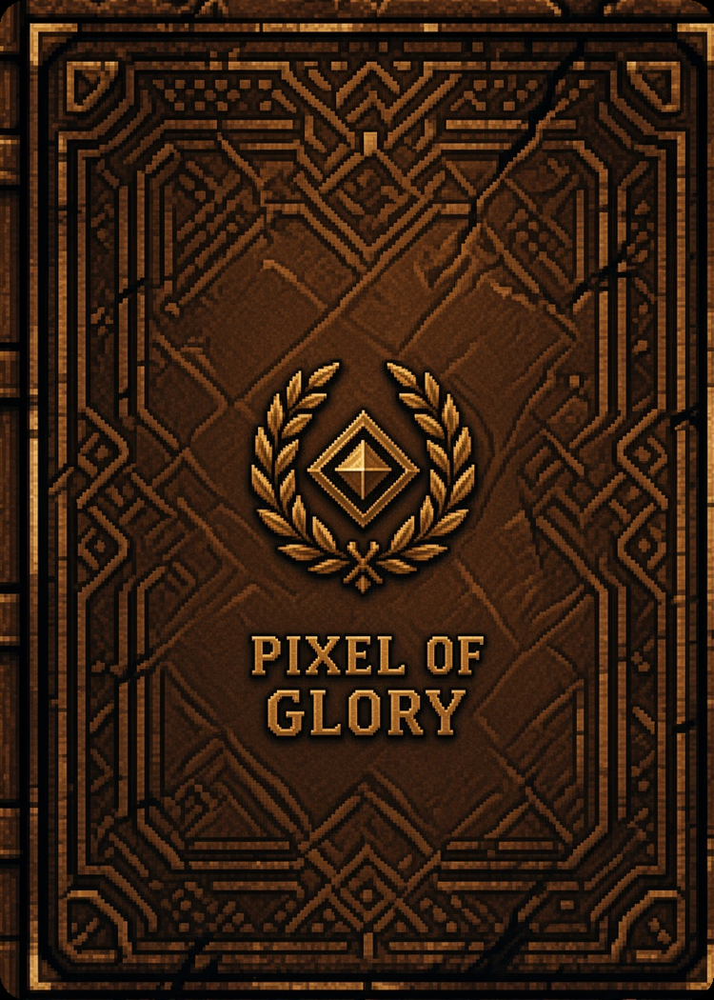
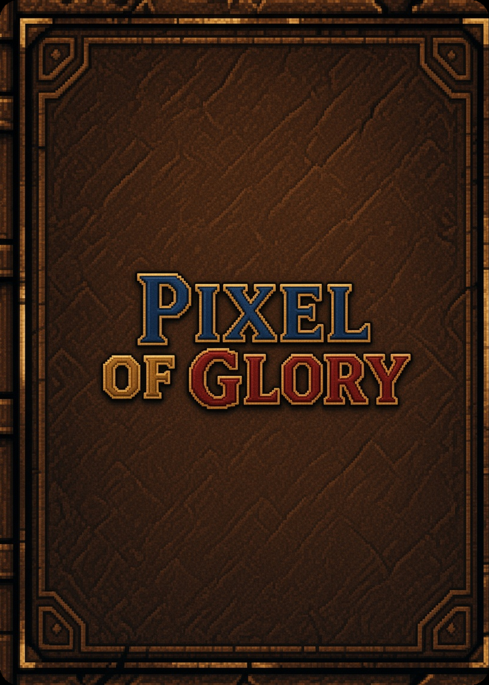
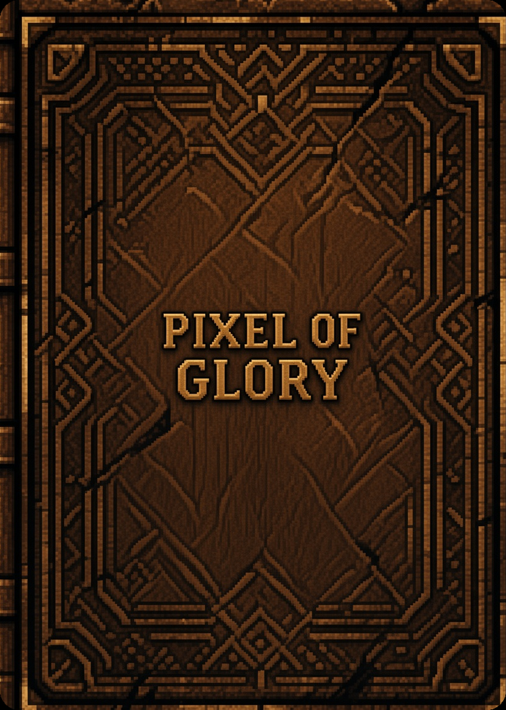
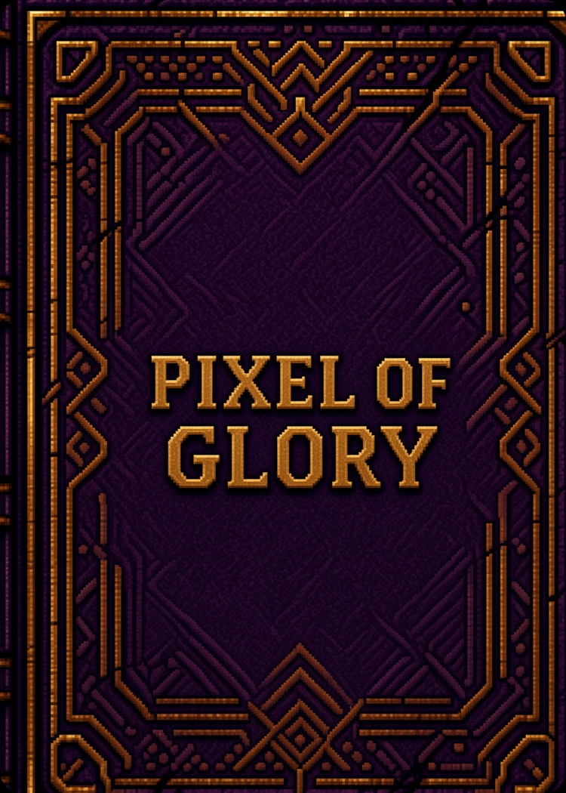
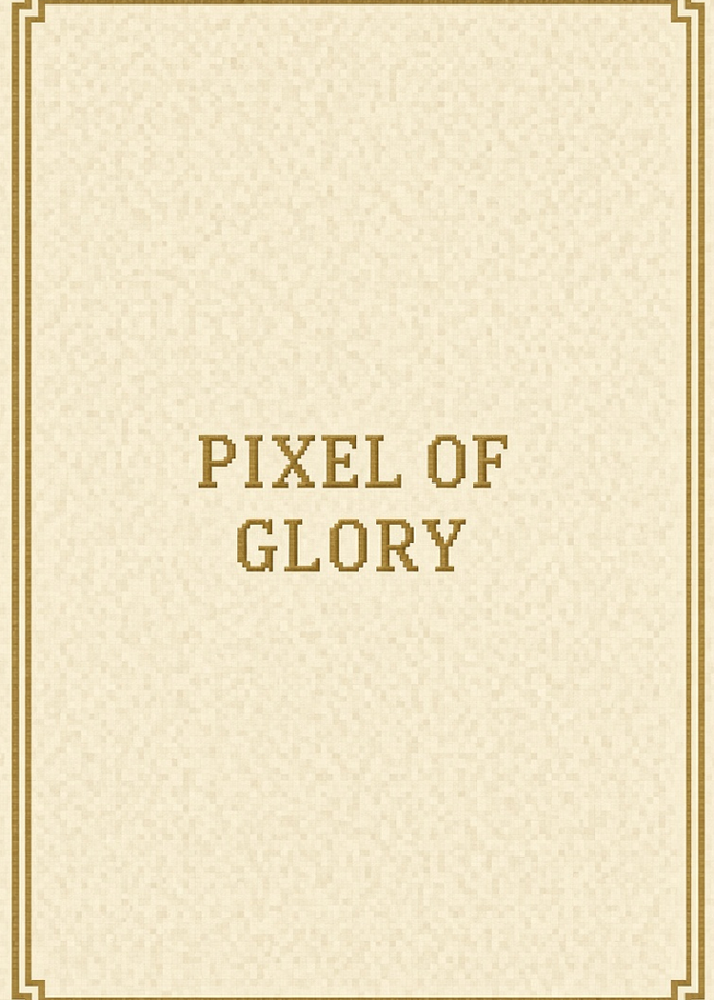
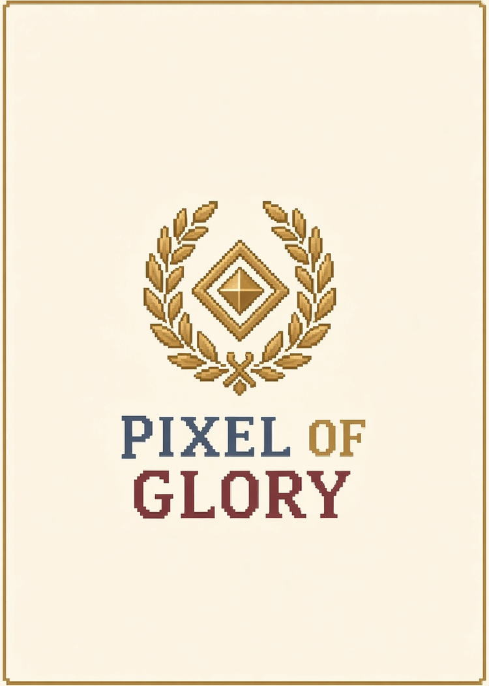
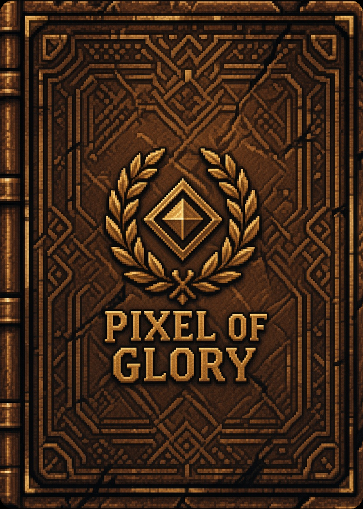

Les 7 dos et l’échelle d’OR ont un cadre équilibré (même marge de chaque côté).
Les originaux sont dans original/.
Les 5 alternatives de la 03 et les serpentins d’OR plus amples sont dans
alternative/.







